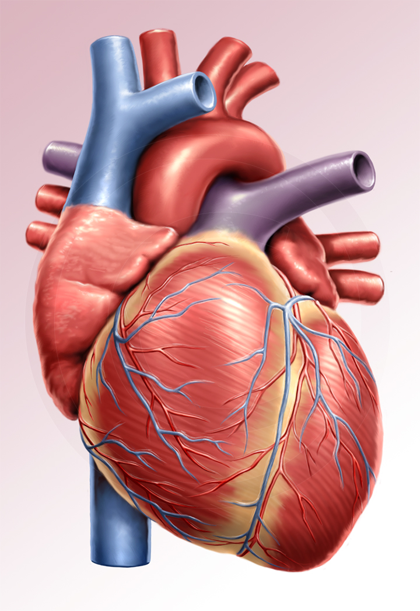
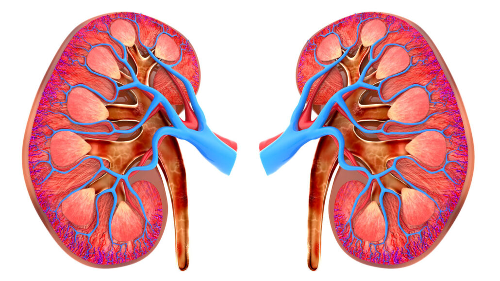
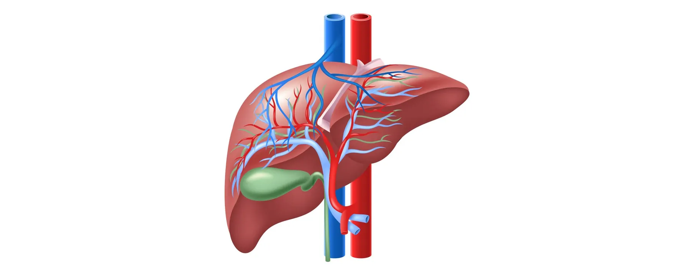
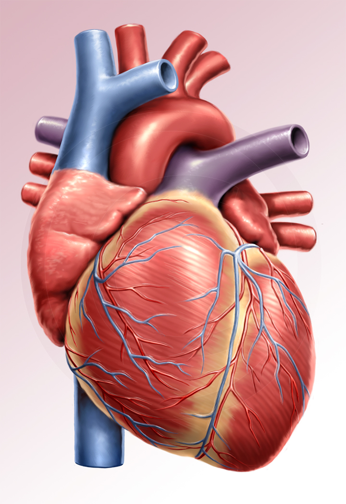
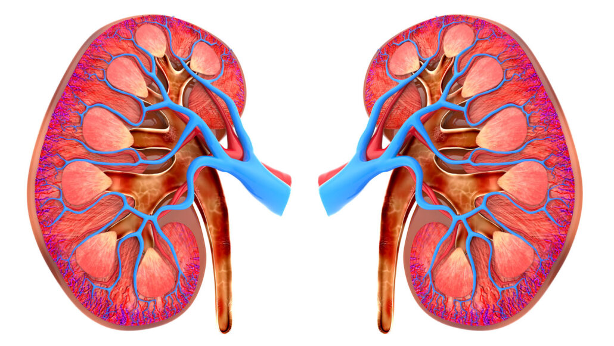
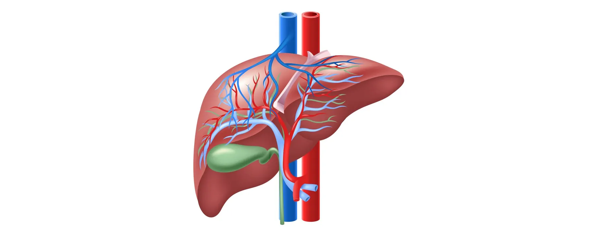

Home Page
Welcome to our organ donation app! Learn about the importance of organ donation and how you can make a difference.
Donate Organs
watch here
Title: The Lifesaving Legacy: Why Organ Donation is Essential
Introduction:
Organ donation stands as a beacon of hope in the face of life-threatening conditions, offering a second chance at life to those in dire need. The importance of organ donation cannot be overstated, as it transcends the boundaries of individual lives, fostering a collective responsibility to make a positive impact on society.
Body: Saving Lives: Organ donation is a lifeline for individuals suffering from organ failure or life-threatening diseases. Vital organs such as the heart, lungs, liver, kidneys, and pancreas can be transplanted to replace failing organs in recipients, providing them with the opportunity to lead healthier and more fulfilling lives.
Addressing the Organ Shortage Crisis: The demand for organs far exceeds the available supply, leading to a critical shortage. By choosing to become an organ donor, individuals contribute to addressing this crisis, ensuring that more lives can be saved through timely and accessible organ transplants.
Transformative Impact of Living Donation: Living donation, where individuals can donate a kidney or a portion of their liver while still alive, exemplifies the remarkable capacity of the human body. This selfless act not only saves lives but also showcases the power of individual contributions towards a greater collective good.
Legacy of Compassion and Generosity: Organ donors leave behind a legacy of compassion and generosity. Their decision to give the gift of life transcends their own existence, creating a ripple effect of positive change in the lives of recipients, their families, and the community at large.
Fostering Solidarity and Unity: Organ donation underscores the interconnectedness of humanity. It bridges gaps and fosters a sense of solidarity, emphasizing that our well-being is intertwined. It encourages a collective responsibility to support one another and uphold the value of every individual life.
Medical Advancements and Research: The field of organ transplantation continues to advance, driven by the need to improve techniques, reduce rejection rates, and enhance long-term outcomes. Organ donation plays a crucial role in facilitating medical research, contributing to ongoing efforts to make transplant procedures more effective and accessible.
Conclusion: In conclusion, organ donation is not just a medical procedure; it is a powerful testament to the human spirit and our capacity for empathy and compassion. By choosing to become an organ donor, individuals become architects of hope, weaving a tapestry of life that extends far beyond their own existence. In a world where the need for organ transplants is ever-present, the decision to donate organs becomes a beacon of light, illuminating a path towards a healthier and more compassionate society.
 






.jpg )
Search for Donors
If you are willing to become an organ donor, fill out the form below:
Search for receivers
If you are willing to become an organ receipent, fill out the form below:
Contact
If you have any questions or concerns, please contact us:
Email: info@organdonationapp.com